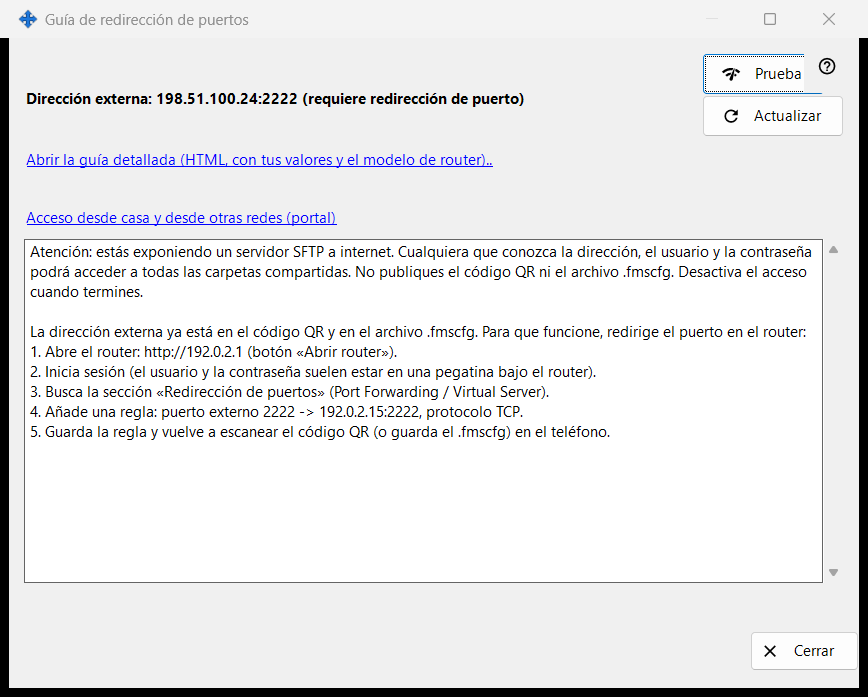
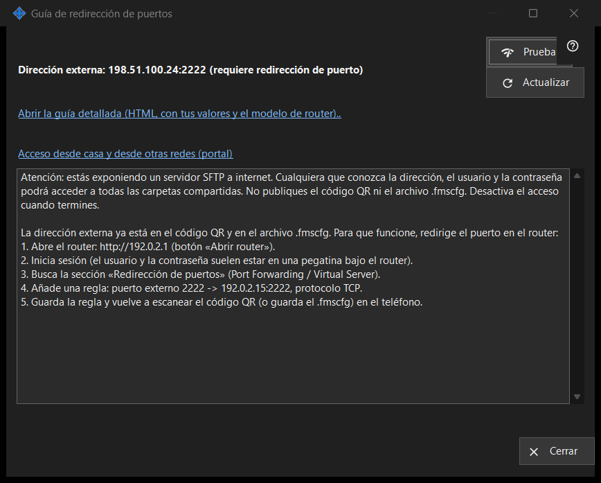

Guía de redirección de puertos
Para qué sirve
Ayuda a hacer que el recurso compartido sea accesible desde fuera de tu red doméstica. Muestra la dirección externa y si el puerto se abrió automáticamente o requiere redirección en el router, y ofrece una prueba y una guía detallada. Se abre desde el botón «Cómo configurar el acceso desde internet» de la ventana principal.


En este orden
- Inicia primero el uso compartido; si no, la ventana te lo pide.
- Lee las líneas de estado: accesible, tras CGNAT o necesita redirección de puertos.
- Si hace falta redirección, abre la guía detallada y crea la regla en el router.
- Pulsa «Prueba» para sondear la dirección desde este PC.
- Confírmalo desde el teléfono con datos móviles y el Wi-Fi apagado.
Los elementos
Estado
La ventana detecta la dirección externa e indica una de estas opciones: «Accesible desde internet», «Dirección externa: .. (requiere redirección de puerto)», «Dirección externa desconocida: consúltala en el router.» o «Detrás de CGNAT: no accesible desde fuera.». Cuando el puerto se abrió automáticamente (UPnP) no hace falta configurar el router, pero solo el teléfono con datos móviles puede confirmar que funciona. «Actualizar» repite la detección.
Router y guías
La línea del router muestra su dirección, o «Detectando el router..» mientras se busca. El enlace «Abrir la guía detallada (HTML, con tus valores y el modelo de router)..» abre una guía HTML local; si no se puede abrir, la ventana lo indica. El enlace «Acceso desde casa y desde otras redes (portal)» abre en el navegador la página correspondiente del portal de ayuda.
Prueba
Sondea la dirección externa desde este PC e informa de «Servidor SFTP accesible», «Puerto abierto, pero sin respuesta SFTP», una conexión cerrada (posiblemente el límite de conexiones) o ninguna respuesta. No es concluyente: muchos routers rechazan desde dentro una solicitud a su propia dirección externa, así que la comprobación fiable es el teléfono con datos móviles.
Seguridad
Abrir SFTP a internet da todas las carpetas compartidas a cualquiera que conozca la dirección, el usuario y la contraseña. No publiques el código QR ni el archivo .fmscfg y desactiva el uso compartido cuando termines. «Cerrar» sale de la ventana.
Ajustes del gestor · Ajustes de uso compartido SFTP · Ajustes del servidor de intercambio